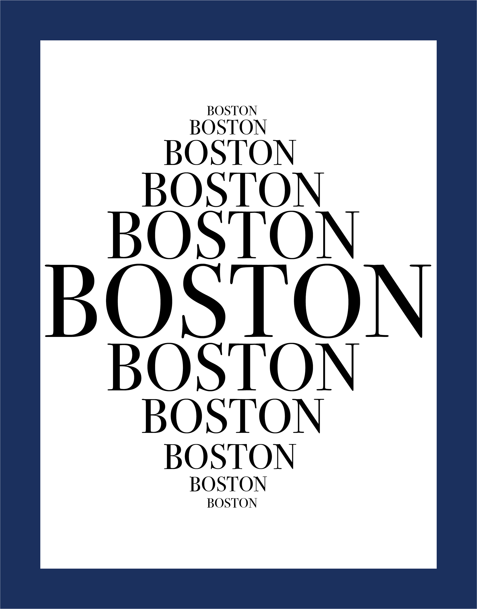
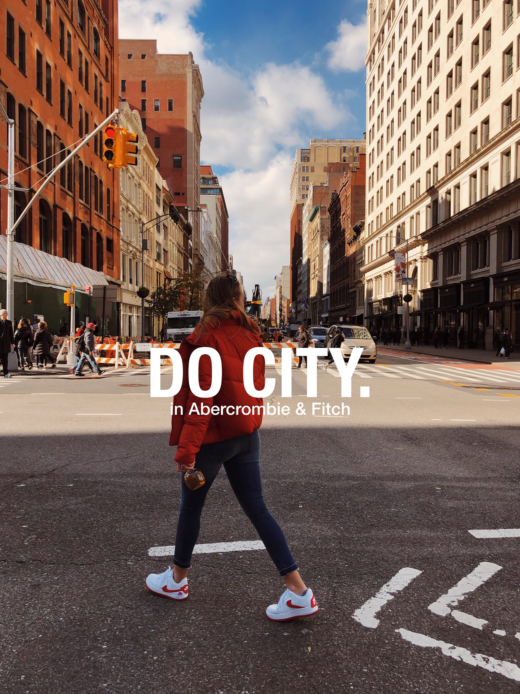
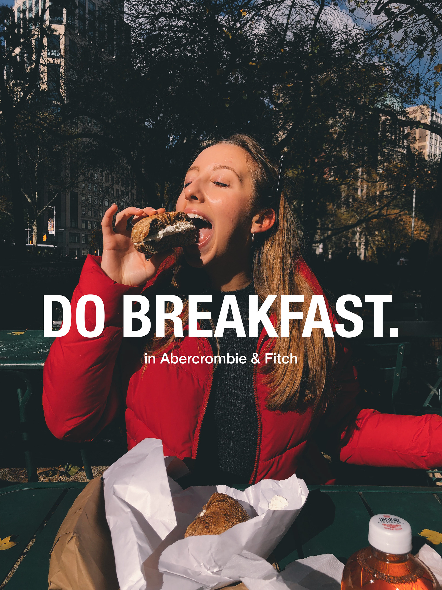

USER INTERFACE: Timer
This timer user interface uses intervals to display time. The user will set how long the timer will be and the intervals they'd like displayed. After each interval is completed, a ring will slowly fade in. This interface was created used Adobe InDesign.


Bioinformatics course design
This is a sample of the many designs created for a graduate Bioinformatics course at Tandon Online, NYU Tandon's online graduate program. Designs are usually created with guidance from course textbooks and lecture presentations provided by professors.

cities' identities
These are designs created using Adobe Illustrator that use typography and color to express different cities' identities.

Abercrombie & Fitch
As a brand agent for Abercrombie & Fitch, I promoted the "Do Life" campaign for the brand. The campaign set out to show how Abercrombie & Fitch clothing can be worn in life's smallest and biggest moments. I captured daily moments in my life as a student in New York.


VR for the Visually Impaired
My team and I worked with the edtech company, "Curated x Kai", to help them find better solutions to make their virtual reality experiences more accessible to students with visual impairements. We set out to take an original experience by Curated x Kai and improve the script and incorporate spatial audio.
UX Research: Classtalk
This was a semester long User Experience project where the focus was educational technology to develop social and communication skills. Research was conducted throughout the semester and then a low-fidelty wireframe was used for usability testing.
Jellyfish Film
This film was created using the iPhone X and Adobe Premiere Pro. The location is Monterey Bay Aquarium in Monterey, California.